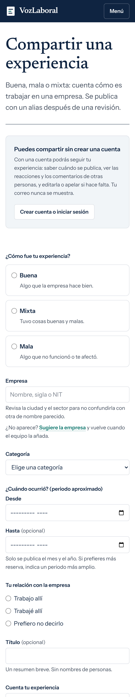
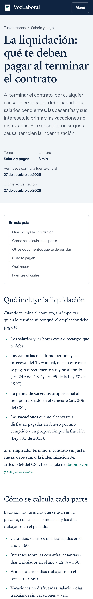

Lo que nadie te cuenta
Experiencias de trabajadores en empresas de Colombia, contadas por ellos mismos.
No solo quejas
Salario y pagos · Bogotá
Jornadas y descansos · Medellín
Salario y pagos · Cali
Ejemplos ilustrativos.
Cómo funciona
Por su nombre, sigla o NIT.
¿No aparece? Pide que la agreguen y el equipo la suma a la lista.
Con un alias, o sin crear cuenta.
Tu nombre y tu correo no aparecen.
Antes de publicarla, para quitar datos personales.

Una comunidad
Tus derechos

Hecho con cuidado
Busca tu empresa, cuenta cómo te fue y conoce tus derechos.
Enlace en la descripción
Es gratis · Puedes participar sin dar tu nombre